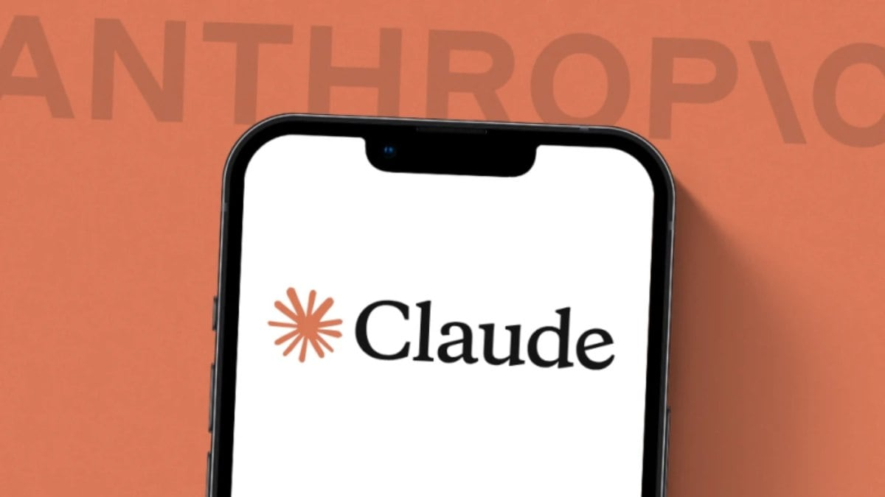

Le moteur spécialisé dans l'analyse de code critique et la détection de menaces. Il est très bon dans l'audit de code et la remédiation des failles trouvés
Le projet Glasswing : Des entreprises comme AWS, Microsoft et d'autres utilisent Claude Mythos pour auditer leurs systemes et ainsi prendre de l'avance sur les attaquants. Page officiel du projet Glasswing : Glasswing Project.
